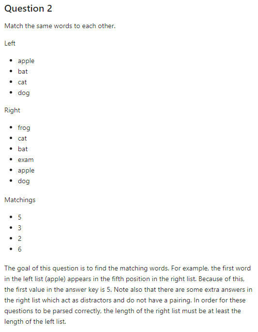
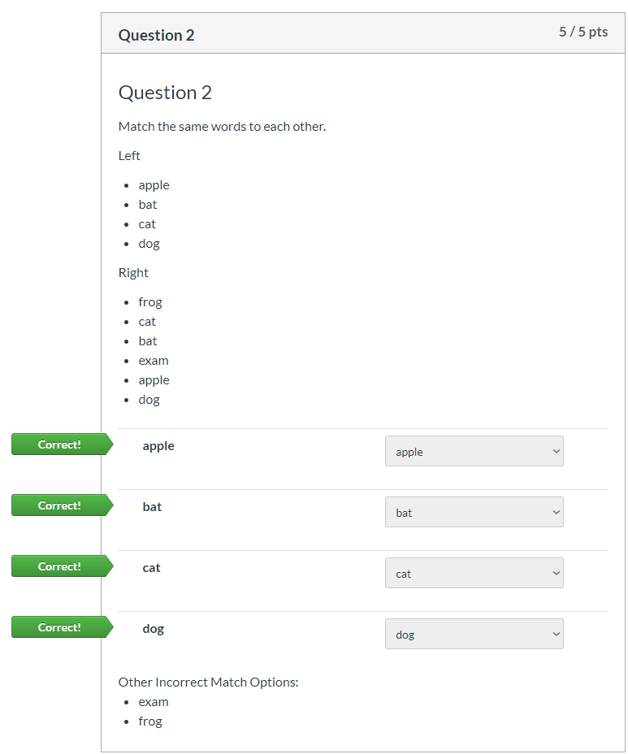
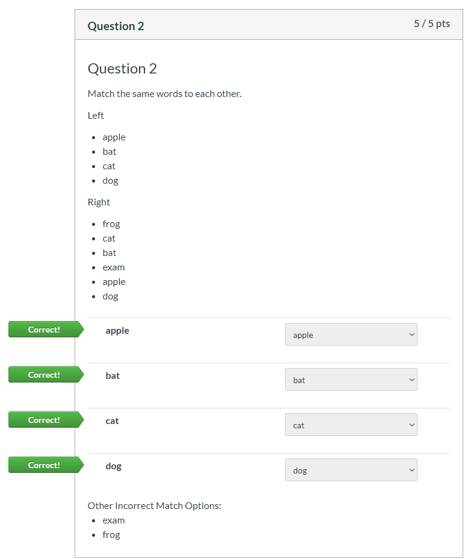
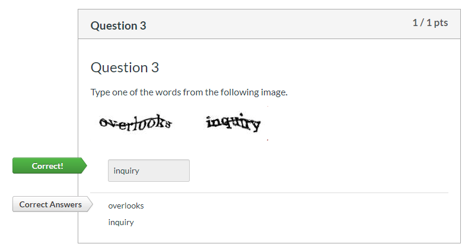
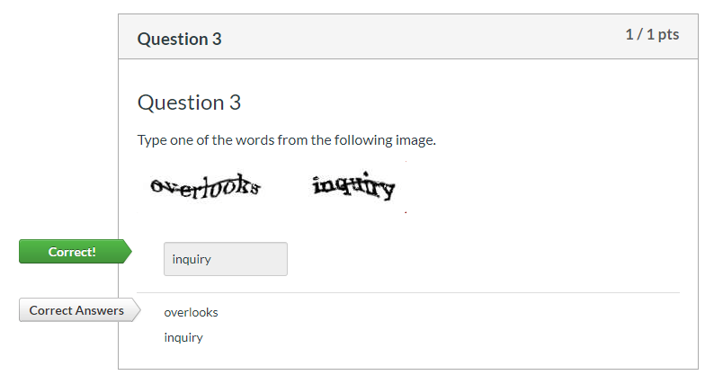

Markdown to canvas¶
Part I Introduction¶
The big picture¶
A brief history of the internet¶
Eben Moglen: coined the term “low-friction collaboration”. Collaboration is a human instinct, just need to remove obstacles preventing it.
Canvas: Very high friction (by design and necessity)
Jupyter/opensource/github: very low friction
OCESE and top-down learning for open source computing¶
md2canvas¶
Project goal¶
collaborate on constructing quizzes using jupyter/jupytext in a low friction environment
deploy on canvas for testing and grading
A typical quiz¶
What I want:
single source of truth (one document provides questions/answers with explanations)
quizzes stay on github (private repo if needed), canvas is read-only
metadata can be added to build quiz database
The canvas REST api¶
Coming next¶
Parameterized problems with papermill_jupytext
Part II demo¶
What is it?¶
md2canvas is a command that can be used to convert your Jupyter Notebook quizzes (in markdown or notebook format) directly to Canvas quizzes, which can then be automatically pushed to your Canvas course. It also has the ability to strip the answers from your quiz so that it is distributable to students and the public.
The documentation is here.
md2canvas is currently under development with the main tasks being adding automatic testing using pytest and GitHub Actions (functional but limited), printing the quizzes without answers to paginated PDF using Sphinx (not started), and parameterizing the quizzes so that multiple versions can be generated.
We are currently looking for alpha testers! If you see this as being useful for your work in any way, please try it out and give us any feedback you have. We are open to suggestions and constructive criticism.
The Basic Commands¶
Install the package:
pip install git+https://github.com/maracieco/md2canvas
Send a quiz to your canvas course:
md2canvas examples/demo_quiz/DemoQuiz.md -f path/to/token.txt -c 51824 -u https://canvas.ubc.ca -s
-f provides the path to a file containing your authentication token
-c provides the course ID
-u provides the Canvas URL
-s tells the program to save these three settings in a config file so they aren’t required in the future
Note: this command won’t actually work, you will need to generate your own token and use your own course ID.
Strip the answers from your quiz so it can be distributed to students:
anstrip examples/demo_quiz/DemoQuiz.md examples/demo_quiz/DemoQuizStripped.md
Quiz Details¶
md2canvas uses the cells and their metadata to parse the questions with their answers and send them to Canvas
Here is a simple example question in its pure markdown form:
+++ {"ctype": "question", "quesnum": 1, "question_type": "multiple_answers_question"} ### Question 1 Choose the odd numbers. * 1 * 2 * 3 * 4 * 5 +++ {"ctype": "answer", "quesnum": 1} Answers * True * False * True * False * True +++ {"ctype": "answer", "quesnum": 1} This is a multiple answers question. On Canvas, it shows up with square boxes beside the answers and allows the quiz taker to select multiple answers. The truth values of the different answers match up one to one. A similar type of question is the multiple *choice* question, which only allows one answer to be chosen and has circles beside the answers on Canvas.
And here is a screenshot of it in a Jupyter Notebook:

In general, there will be one question cell that contains all the info necessary to understand and solve the question. It will be followed by some answer cells. The first one will be parsed for answer data and must follow specific formatting. The following cells can be anything, so they can be used as descriptions of the answers or code cells for computation or anything really. All of these cells will be stripped by anstrip as long as they are tagged as answer cells in the metadata.
When this question is part of a quiz that is pushed to Canvas, it looks like this for the student during the quiz:

And like this once the quiz has been graded:

Here is another example that is a matching question, notice that it sets an extra field in the metadata (points_possible) that changes the number of points the question is worth:
+++ {"ctype": "question", "quesnum": 2, "question_type": "matching_question", "points_possible": 5} ### Question 2 Match the same words to each other. Left * apple * bat * cat * dog Right * frog * cat * bat * exam * apple * dog +++ {"ctype": "answer", "quesnum": 2} Matchings * 5 * 3 * 2 * 6 +++ {"ctype": "answer", "quesnum": 2} The goal of this question is to find the matching words. For example, the first word in the left list (apple) appears in the fifth position in the right list. Because of this, the first value in the answer key is 5. Note also that there are some extra answers in the right list which act as distractors and do not have a pairing. In order for these questions to be parsed correctly, the length of the right list must be at least the length of the left list.


 
This is a simpler type of question called a short answer question:
+++ {"ctype": "question", "quesnum": 3, "question_type": "short_answer_question"} ### Question 3 Type one of the words from the following image.  +++ {"ctype": "answer", "quesnum": 3} Answers * overlooks * inquiry +++ {"ctype": "answer", "quesnum": 3} The image included in this question is automatically uploaded to Canvas when md2canvas is run. This means that if you can see it when you preview the markdown or Jupyter Notebook, you will see it on Canvas as well.
 
Finally, this question shows off LaTeX:
+++ {"ctype": "question", "quesnum": 4, "question_type": "numerical_question"} ### Question 4 Evaluate the expression $$\frac{\pi r^2}{2}$$ where $r = 2$? Give your answer to three decimal places. +++ {"ctype": "answer", "quesnum": 4} * 6.283, 3: precision_answer +++ {"ctype": "answer", "quesnum": 4} Check this with python: ```{code-cell} ipython3 :ctype: answer :quesnum: 4 import math r = 2 ans = math.pi * r ** 2 / 2 print(f"{ans:.3f}") np.testing.assert_almost_equal(ans,6.383,decimals=3) ```


In the future, we envision that md2canvas will be able to compute the answers just based off the code cells.
Other question types also exist. There are examples of all of them in md2canvas/examples/sample_quiz/SampleQuiz.md.
We are now testing this code! The tests (found here) run on every change, so the validity is maintained.
Again, we are looking for alpha testers. Any feedback is greatly appreciated!
Summary¶
The combination of jupyter/jupytext works well for quiz creation.
Quizzes can be uploaded to github, tested with github actions, printed to pdfs, and deployed on canvas.The canvas REST api works, is (relatively) easy to use from python, with some quirks.
papermill_jupytext opens up the possibility of distributing different quizzes to each student, generate many different practice problems, etc.